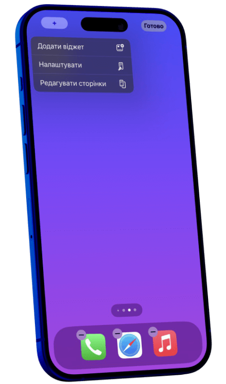
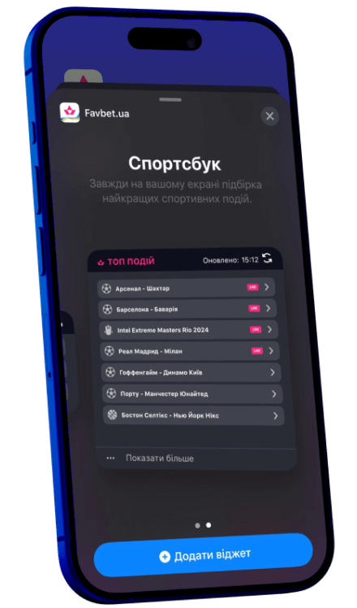

Твій портал у всесвіт гри
Мініатюрний, але потужний віджет, який живе на головному екрані твого смартфона. У кілька дотиків — миттєвий доступ до live-подій. Це не просто інструмент — це компаньйон, що стає частиною твого lifestyle.
Встановити
Актуальна інформація
Автоматична синхронизація з Favbet
Компактний та розширений формат віджету
Підтримка світлої та темної теми
Як встановити віджет?
Крок 1
Встановіть останню версію додатку FAVBET з App Store
Scan to download IOS App

Крок 2
Натисніть і утримуйте порожню ділянку на екрані вашого пристрою
Крок 3
Оберіть «Додати віджет» та знайдіть FAVBET у списку доступних додатків

Крок 4
Оберіть розмір віджета, перемістіть його на необхідне місце та натисніть «Додати віджет»